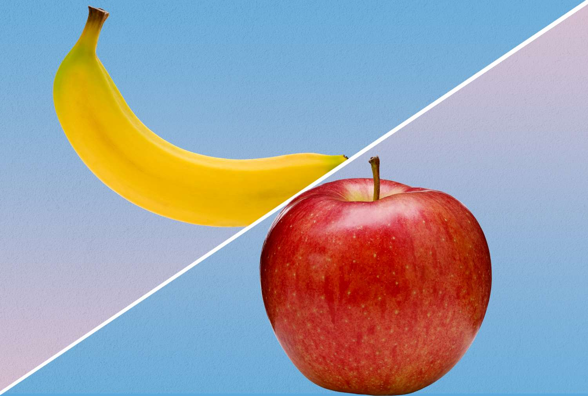

For this project, I built a device that uses a color sensor and machine learning to tell apples and bananas apart. I trained it by scanning each fruit and storing the sensor’s red, green and blue (RGB) values. To classify a new fruit, the device treats its color reading as a point in 3D RGB space and finds the closest training point. I first used K-Nearest Neighbor with k = 3, but that left a lot of readings in the middle that it couldn’t confidently assign to either fruit. I switched to a single nearest neighbor, which always gives a clear answer and worked better with my training data.